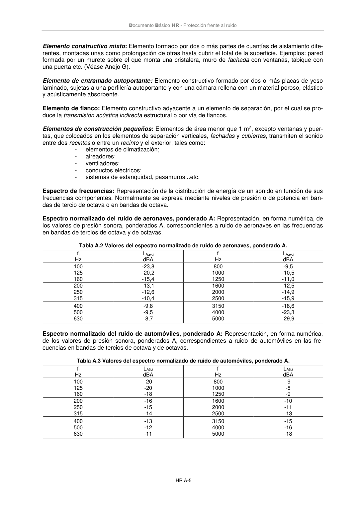

DB-HR · Diferencia de niveles normalizada de elementos de construcción pequeños, Dn,e: Diferencia de niveles normalizada, en dB, atribuible a elementos de construcción pequeños. · versión 2019-12-20 · capa oficial
Formatos: JSON compacto · Markdown · PDF fuente
Ámbito del documento · texto del ámbito · documento y tablas
ID técnico a0096 · PDF pág. 46-47 · jerarquía no validada por persona · contrastado con el literal de la página 46 (marcador PDF); no validado por persona · padre: a0092
Documento Básico HR - Protección frente al ruido HR A-4 siendo D2m,nT,idiferencia de niveles estandarizada, en la banda de frecuencia i, [dB]; LAtr,i valor del espectro normalizado del ruido de automóviles, ponderado A, en la banda de frecuen- cia i, [dBA]; i recorre todas las bandas de frecuencia de tercio de octava de 100 Hz a 5 kHz. En caso de que el ruido exterior dominante sea el de aeronaves también se utilizará este índice para la valoración global, pero usando los valores del espectro normalizado de ruido de aeronaves, ponderado A. Diferencia de niveles estandarizada, ponderada A, entre recintos interiores, DnT,A: Valoración glo- bal, en dBA, de la diferencia de niveles estandarizada, entre recintos interiores,DnT, para ruido rosa. Se define mediante la expresión siguiente. = − − = n 1 i 10 /)i, nT D i, Ar L ( A , nT 10 lg 10 D [dBA] (A.7) siendo DnT,i diferencia de niveles estandarizada en la banda de frecuencia i, [dB]; LAr,i valor del espectro normalizado del ruido rosa, ponderado A, en la banda de frecuencia i, [dBA]; i recorre todas las bandas de frecuencia de tercio de octava de 100 Hz a 5 kHz. Diferencia de niveles normalizada de elementos de construcción pequeños, Dn,e: Diferencia de niveles normalizada, en dB, atribuible a elementos de construcción pequeños. Se define mediante la expresión siguiente: A A lg 10 L L D 0 2 1 e ,n + − = [dB] (A.8) siendo L1 nivel medio de presión sonora en el recinto emisor, [dB]; L2 nivel medio de presión sonora en el recinto receptor, [dB]; A área de absorción acústica equivalente del recinto receptor, [m2]; A0 área de absorción acústica equivalente de referencia, de valor A0=10 m2. Diferencia de niveles por la forma de la fachada, Lf,s: Mejora del aislamiento acústico a ruido aéreo de fachadas, en dB, por efecto de apantallamientos debidos a petos, formas especiales y retranqueos. (Véase anejo F). Se define mediante la expresión siguiente: 3 L L L s,1 m 2 ,1 s,f + − = [dB] (A.9) siendo L1,2m nivel medio de presión sonora medido a 2 m frente a la fachada o la cubierta, [dB]; L1,s nivel medio de presión sonora medido en el plano de la fachada o la cubierta, [dB]. Elemento constructivo homogéneo: Elemento de una sola hoja de fábrica, de hormigón, productos pétreos, etc. Se consideran forjados homogéneos las losas de hormigón, los forjados con elementos aligerantes cerámicos y de hormigón y los forjados de chapa colaborante. Documento Básico HR - Protección frente al ruido HR A-5 Elemento constructivo mixto: Elemento formado por dos o más partes de cuantías de aislamiento dife- rentes, montadas unas como prolongación de otras hasta cubrir el total de la superficie. Ejemplos: pared formada por un murete sobre el que monta una cristalera, muro de fachada con ventanas, tabique con una puerta etc. (Véase Anejo G). Elemento de entramado autoportante: Elemento constructivo formado por dos o más placas de yeso laminado, sujetas a una perfilería autoportante y con una cámara rellena con un material poroso, elástico y acústicamente absorbente. Elemento de flanco: Elemento constructivo adyacente a un elemento de separación, por el cual se pro- duce la transmisión acústica indirecta estructural o por vía de flancos. Elementos de construcción pequeños: Elementos de área menor que 1 m2, excepto ventanas y puer- tas, que colocados en los elementos de separación verticales, fachadas y cubiertas, transmiten el sonido entre dos recintos o entre un recinto y el exterior, tales como: - elementos de climatización; - aireadores; - ventiladores; - conductos eléctricos; - sistemas de estanquidad, pasamuros...etc. Espectro de frecuencias: Representación de la distribución de energía de un sonido en función de sus frecuencias componentes. Normalmente se expresa mediante niveles de presión o de potencia en ban- das de tercio de octava o en bandas de octava. Espectro normalizado del ruido de aeronaves, ponderado A: Representación, en forma numérica, de los valores de presión sonora, ponderados A, correspondientes a ruido de aeronaves en las frecuencias en bandas de tercios de octava y de octavas. Tabla A.2 Valores del espectro normalizado de ruido de aeronaves, ponderado A. fi Hz LAav,i dBA fi Hz LAav,i dBA 100 125 160 -23,8 -20,2 -15,4 800 1000 1250 -9,5 -10,5 -11,0 200 250 315 -13,1 -12,6 -10,4 1600 2000 2500 -12,5 -14,9 -15,9 400 500 630 -9,8 -9,5 -8,7 3150 4000 5000 -18,6 -23,3 -29,9 Espectro normalizado del ruido de automóviles, ponderado A: Representación, en forma numérica, de los valores de presión sonora, ponderados A, correspondientes a ruido de automóviles en las fre- cuencias en bandas de tercios de octava y de octavas. Tabla A.3 Valores del espectro normalizado de ruido de automóviles, ponderado A. fi Hz LAtr,i dBA fi Hz LAtr,i dBA 100 125 160 -20 -20 -18 800 1000 1250 -9 -8 -9 200 250 315 -16 -15 -14 1600 2000 2500 -10 -11 -13 400 500 630 -13 -12 -11 3150 4000 5000 -15 -16 -18

PDF fuente redistribuible: copia fiel enlazada en esta página (SHA256 verificado).